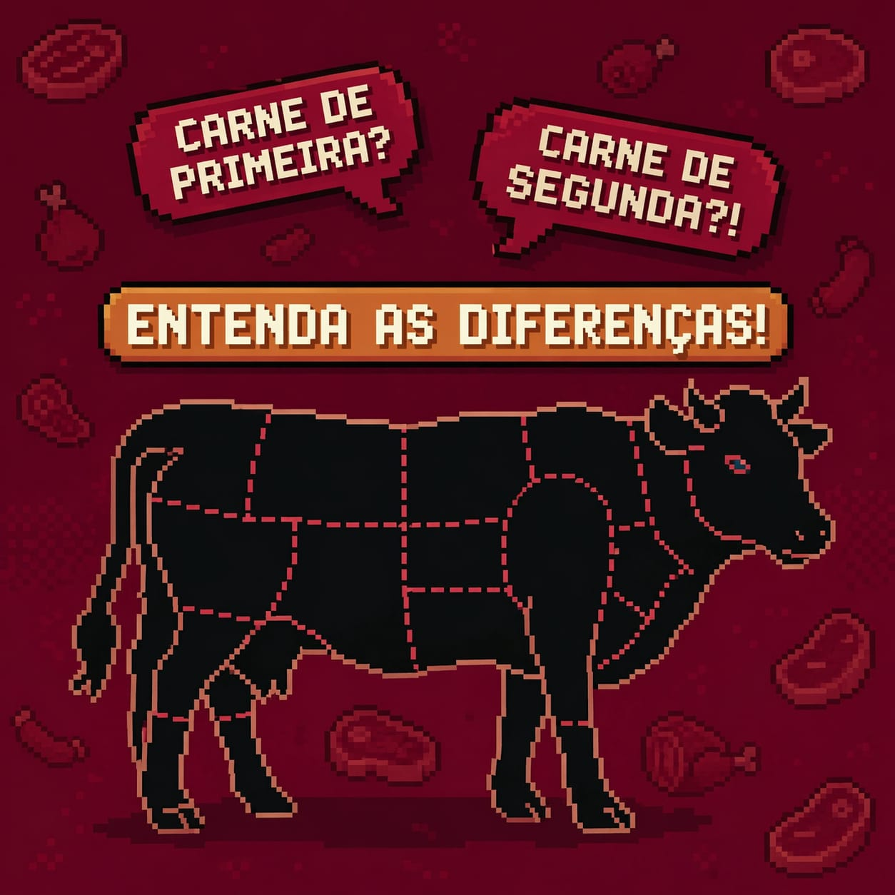

About
Quiz
Home
Créditos

Aprenda a observar as características que ajudam a avaliar a qualidade da carne.
Descubra como a cor, o cheiro e a aparência podem ajudar na avaliação da carne.
Conheça os principais cortes de carne e descubra suas características.